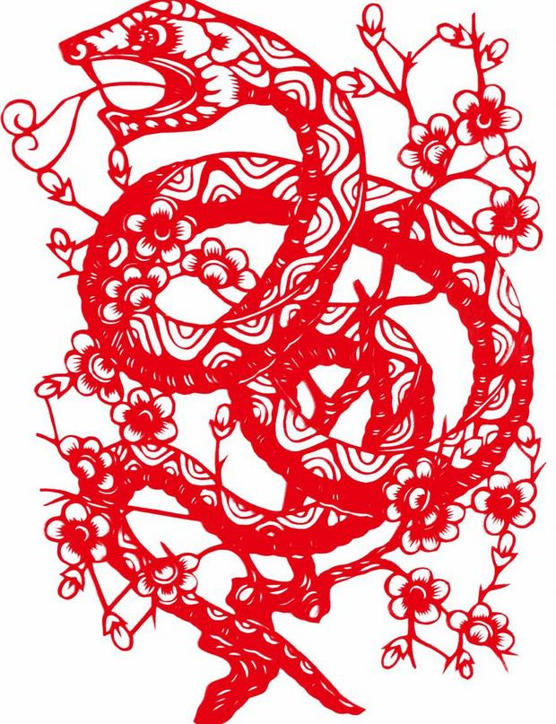

Snake
The Snake's Personality:
In Chinese culture, the Snake is the most enigmatic animal among the twelve zodiac animals. People born in a year of the Snake are supposed to be the most intuitive. Snakes tend to act according to their own judgments, even while remaining the most private and reticent. They are determined to accomplish their goals and hate to fail. Snakes represent the symbol of wisdom. They are intelligent and wise. They are good at communication but say little. Snakes are usually regarded as great thinkers. Snakes are materialistic and love keeping up with the Joneses. They love to posses the best of everything, but they have no patience for shopping. Snake people prefer to work alone, therefore they are easily stressed. If they seem unusually stressed, it is best to allow them their own space and time to return to normal.
The Best Careers for Snakes
Snakes are very creative and extremely diligent. Though Snakes work very hard, they have a tendency to be job-hoppers, as they easily become bored. Snakes are great thinkers. Complex problems stimulate them. And of course they're excellent problem-solvers and thrive under tight deadlines.
Good career choices for Snakes include: scientist, analyst, investigator, painter, potter, jeweler, astrologer, magician, dietician, and sociologist.
The Luckiest Things for Snakes
- Lucky numbers: 2, 8, 9, and numbers containing them (like 28 and 89)
- Lucky days: the 1st and 23rd of Chinese lunar months
- Lucky colors: black, red, and yellow
- Lucky flowers: orchid and cactus
- Lucky direction: east, west, and southwest
- Lucky months: the 1st, 8th, and 11th lunar months
Source: chinahighlights.com